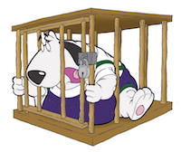
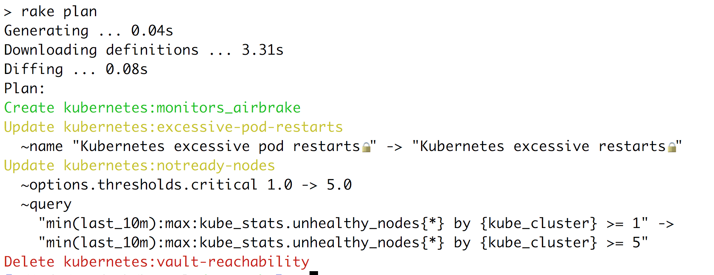

class: center, middle # Kennel  ??? - library to manage datadog monitors/slos/dashes as code - full history / PR review / search / reuse --- # Michael Grosser Senior Staff Engineer @ Zendesk<br/> <table> <tr> <td></td> <td> </td> <td style="vertical-align: top"> rubygems.org grosser<br/> github.com/grosser<br/> twitter.com/grosser<br/> grosser.it </td> </tr> </table> ??? - job: build infrastructure to make other devs more efficient --- # Why Kennel ? ??? --- # Why Kennel ? - Documented, reusable, and searchable ??? able to change everything globally --- # Why Kennel ? - Documented, reusable, and searchable - Changes are PR reviewed and auditable ??? --- # Why Kennel ? - Documented, reusable, and searchable - Changes are PR reviewed and auditable - Updating shows diff before applying ??? --- # Why Kennel ? - Documented, reusable, and searchable - Changes are PR reviewed and auditable - Updating shows diff before applying - Automated import of existing monitors/dashboards/slos ??? --- # Update  ??? - compares api with local state - says what will change - applies --- # Code <!-- see code/project.rb --> ```Ruby class Foo < Kennel::Models::Project defaults( tags: -> { ["priority:high"] + super() }, team: -> { Teams::Bar.new }, parts: -> { [ Monitors::NotReady.new(self), Monitors::KubernetesCpuOverRequest.new(self), ] } ) end ``` ??? - monitors and slos are grouped by project and belong to a team - they inherit tags from their project and team - NotReady is a reusable monitor we share for all ... checks for kubernetes pods that are in trouble - ruby: everything is a class and can be inherited and extended --- # Interoperable - can be used by single team/project - can be used with other tools --- # Flow ??? - development process --- # Flow - import or create a new monitor ??? --- # Flow - import or create a new monitor - `rake kennel:update_datadog` ??? - try ... auto-reverted --- # Flow - import or create a new monitor - `rake kennel:update_datadog` - make a PR ??? - diff will be visible --- # Flow - import or create a new monitor - `rake kennel:update_datadog` - make a PR - merge to apply ??? --- # Custom logic ??? - built in ruby, can modify core logic --- # Custom logic <!-- see code/hack.rb --> ```Ruby Kennel::Models::Monitor.prepend(Module.new do def validate_json(data) super message = data.fetch(:message) return if !message.include?("@pagerduty") data[:name] += "📟" # mark them consistently if !message.include?("Runbook: ") invalid! "message must include a Runbook" end end end) ``` ??? - ensure all pagerduty monitors have a runbook - mark them consistently with an emoji --- # 🔄 Recap - config in code for reuse ??? Don't say recap, just start --- # 🔄 Recap - config in code for reuse - config in git for auditing ??? --- # 🔄 Recap - config in code for reuse - config in git for auditing - inherit tags and escalation from teams --- # 🔄 Recap - config in code for reuse - config in git for auditing - inherit tags and escalation from teams - enforces policies --- # 🔄 Recap - config in code for reuse - config in git for auditing - inherit tags and escalation from teams - enforces policies - github.com/grosser/kennel ??? template repo to get started